1004D20 POWER UNIT (AUTOMATIC TRANSMISSION) REMOVED, REMOVE AND RE-BUILD
- Path
- Procedures > 10 ENGINE > 1004 ENGINE AND POWER UNIT > 1004D REMOVE ENGINE AND WASH > 1004D20 POWER UNIT (AUTOMATIC TRANSMISSION) REMOVED, REMOVE AND RE-BUILD
- Kind
- repair procedure (removal / refitting; the operation number is the code)
- Applies to
- engines: 2.2, 1.9 JTD 16v, 2.4 JTD 20v; all production periods; only with equipment: AUTOMATIC TRANSMISSION
- Interactive page
- https://sloeber94.github.io/elrnDB-fCrm/en/#/194002122
Applies to: engines: 2.2; all production periods
 Removing
Removing
 Refitting
Refitting1. Undo the bolts (1a) and remove the left side engine support flexible mounting (1b).
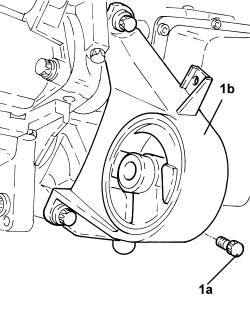
Applies to: engines: 2.2; all production periods
1. Undo the bolts (1a) and remove the bracket on the gearbox for the lower reaction rod (1b).
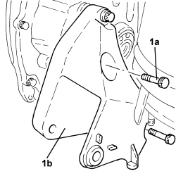
Applies to: engines: 2.2; all production periods
1. Open the access cover for the electrical connection.
2. Undo the nut (2a) and disconnect the electrical connections (2b) from the starter motor.
Description | Connector | |
|---|---|---|
2b | Starter motor |
3. Undo the bolts (3a) and remove the starter motor (3b).
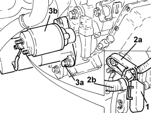
Applies to: engines: 2.2; all production periods
1. Rotate the crankshaft to gain access to and undo the three bolts fixing the torque converter to the engine flywheel.
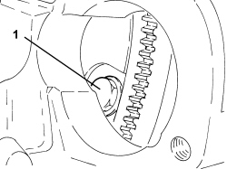
Applies to: engines: 2.2; all production periods
1. Undo the bolt fixing the automatic gearbox to the engine block on the left side.
2. Undo the left bolt fixing the crankcase sump to the automatic gearbox.
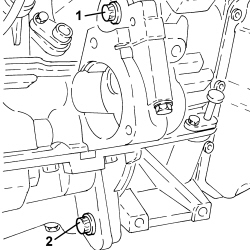
Applies to: engines: 2.2; all production periods
1. Undo the upper bolt illustrated in the diagram securing the automatic gearbox to the engine crankcase.
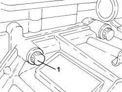
Applies to: engines: 2.2; all production periods
1. Undo the bolts fixing the automatic gearbox to the engine block on the right side.
2. Undo the right bolt fixing the crankcase sump to the automatic gearbox.
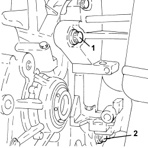
Applies to: engines: 2.2; all production periods
- Support the automatic gearbox using a hydraulic lift.
1. Undo the remaining upper bolt (1a) and remove the automatic gearbox (1b).
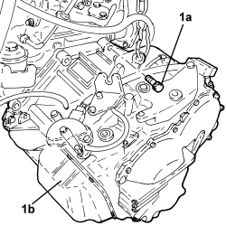
Applies to: engines: 2.2; all production periods
1. Remove the torque converter.
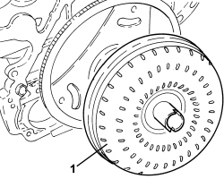
Applies to: engines: 2.2; all production periods
Refitting
Removing- Check and clean the threads on the torque converter housing the bolts securing it to the engine flywheel.
- Check that the automatic gearbox centering bushes are correctly housed in the engine crankcase.
- Lubricate the centering housing for the torque converter with a thin layer of lubricating grease.
- Check the torque converter centering pin. check for rust, clean, if necessary, and lubricate with a thin layer of lubricating grease.
1. Check that the torque converter is correctly positioned by using a sliding gauge to check that the distance between the torque converter connector threades and the matching surface of the automatic gearbox is about 16 mm.

Applies to: engines: 2.2; all production periods
- Place the automatic gearbox back in its housing using a hydraulic lift.
- Tighten the bolts securing the automatic gearbox to the specified torque.
Component | Fastening | dia | Value (daNm) | Validity |
|---|---|---|---|---|
Automatic transmission | Bolt | M12 | (engine side) 4.8 - 7.2 | 2.2 CAE |
1. Place the three new bolts securing the torque converter to the engine flywheel back in their housings and tighten them to the recommended torque.
Component | Fastening | dia | Value (daNm) | Validity |
|---|---|---|---|---|
Torque converter | Bolt (pretreated to be replaced) | M10 | (engine flywheel side) 4.5 - 5.5 | 2.2 CAE |
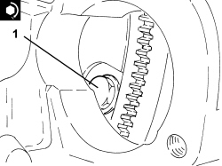
Applies to: engines: 2.2; all production periods
1. Place the starter motor (1a) in its housing and secure it tightening the bolts (1b) to the recommended torque.
Component | Fastening | dia | Value (daNm) | Validity |
|---|---|---|---|---|
Starter motor | Bolt | M10 x 1.5 | (gearbox side) 3.5 - 4.5 | 2.2 |
2. Connect the electrical connections (2a) to the starter motor and secure them using the nuts(2b).
3. Close the access cover for the electrical connections.
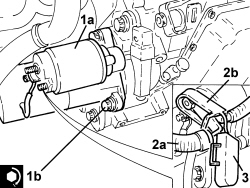
Applies to: engines: 2.2; all production periods
1. Refit the lower reaction rod bracket (1a) in its seat on the gearbox and secure it by tightening the bolts (1b) to the recommended torque.
Component | Fastening | dia | Value (daNm) | Validity |
|---|---|---|---|---|
Bracket on gearbox for lower reaction rod | Bolt | M12 | (gearbox side) 7.5 - 8.5 |
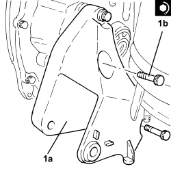
Applies to: engines: 2.2; all production periods
1. Place the left side engine support flexible mounting (1a) in its housing and secure it tightening the bolts (1b) to the recommended torque.
Component | Fastening | dia | Value (daNm) | Validity |
|---|---|---|---|---|
Flexible mounting for left side engine support | Bolt | M12 | (gearbox side) 7.5 - 8.5 |
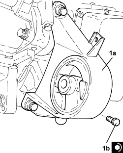
Applies to: engines: 1.9 JTD 16v, 2.4 JTD 20v; all production periods
Removing
Refitting1. Undo the nuts (1a) and disconnect the electrical connections (1b) from the starter motor.
Description | Connector | |
|---|---|---|
1b | Starter motor |
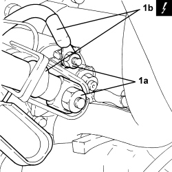
Applies to: engines: 1.9 JTD 16v, 2.4 JTD 20v; all production periods
1. Undo the bolts (1a) and remove the starter motor (1b).

Applies to: engines: 1.9 JTD 16v, 2.4 JTD 20v; all production periods
1. Rotate the crankshaft to gain access to and undo the six bolts fixing the torque converter to the engine flywheel.

Applies to: engines: 1.9 JTD 16v, 2.4 JTD 20v; all production periods
1. Undo the automatic gearbox retaining bolts (1a), (1b) and nuts (1c).
2. Separate the automatic gearbox from the engine.
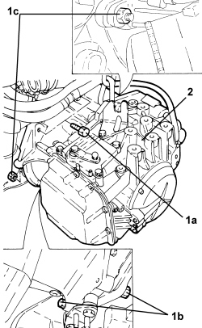
Applies to: engines: 1.9 JTD 16v, 2.4 JTD 20v; all production periods
- Remove the torque converter.
Applies to: engines: 1.9 JTD 16v, 2.4 JTD 20v; all production periods
Refitting
Removing- Check and clean the threads on the torque converter housing the bolts securing it to the engine flywheel.
- Check that the automatic gearbox centering bushes are correctly housed in the engine crankcase.
- Lubricate the centering housing for the torque converter with a thin layer of lubricating grease.
- Check the torque converter centering pin. check for rust, clean, if necessary, and lubricate with a thin layer of lubricating grease.
- Place the torque converter back in its housing.
1. Check that the torque converter is correctly positioned by using a sliding gauge to check that the distance between the torque converter connector threades and the matching surface of the automatic gearbox is about 16 mm.
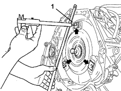
Applies to: engines: 1.9 JTD 16v, 2.4 JTD 20v; all production periods
1. Place the automatic gearbox back in its housing.
2. Tighten the bolts (2a), (2b) and the nut (2c) securing the automatic gearbox to the specified torque.
Component | Fastening | dia | Value (daNm) | Validity |
|---|---|---|---|---|
Automatic transmission | Bolt | M12 | (engine side) 4.8 - 7.2 | 1.9 JTD 16v CAE 2.4 JTD 20v CAE |
Component | Fastening | dia | Value (daNm) | Validity |
|---|---|---|---|---|
Automatic transmission | Nut | M12 | (engine side) 4.8 - 7.2 | 1.9 JTD 16v CAE 2.4 JTD 20v CAE |
Component | Fastening | dia | Value (daNm) | Validity |
|---|---|---|---|---|
Automatic transmission | Bolt | M10 | (engine crankcase sump side) 3.2 - 4.8 | 1.9 JTD 16v CAE 2.4 JTD 20v CAE |
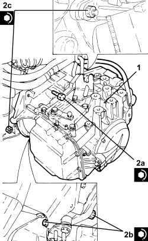
Applies to: engines: 1.9 JTD 16v, 2.4 JTD 20v; all production periods
1. Place the six new bolts securing the torque converter to the engine flywheel back in their housings and tighten them to the recommended torque.
Component | Fastening | dia | Value (daNm) | Validity |
|---|---|---|---|---|
Torque converter | Bolt | M8 | (engine flywheel side) 2.9 - 3.5 | 1.9 JTD 16v CAE |
Component | Fastening | dia | Value (daNm) | Validity |
|---|---|---|---|---|
Torque converter | Bolt (pretreated to be replaced) | M10 | (engine flywheel side) 4.5 - 5.5 | 2.4 JTD 20v CAE |
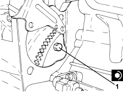
Applies to: engines: 1.9 JTD 16v, 2.4 JTD 20v; all production periods
1. Place the starter motor (1a) in its housing and secure it tightening the bolts (1b) to the recommended torque.
Component | Fastening | dia | Value (daNm) | Validity |
|---|---|---|---|---|
Starter motor | Bolt | M8 | (automatic gearbox side) 2.3 - 2.8 | 1.9 JTD 16v CAE 2.4 JTD 20v CAE |
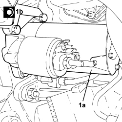
Applies to: engines: 1.9 JTD 16v, 2.4 JTD 20v; all production periods
- Connect the electrical connections to the starter motor and secure them using the nuts.